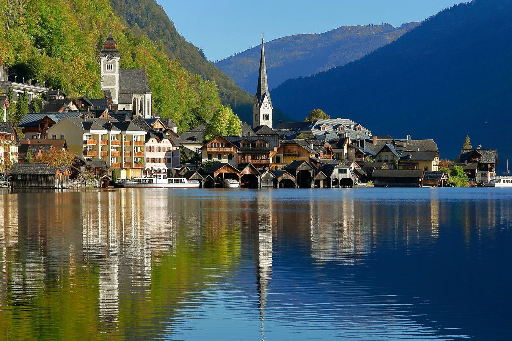

Tourism is an important industry that contributes to the economic growth of many countries around the world. It involves people traveling to different places for leisure, business, or other purposes. Here are some reasons why tourism is important:
- Boosts the economy
- Preserves culture and heritage
- Promotes environmental conservation
- Provides educational opportunities
Boosts the economy
Tourism is a major source of income for many countries. It creates jobs and generates revenue for local businesses such as hotels, restaurants, and souvenir shops. Tourists also spend money on transportation, entertainment, and other activities, which helps to stimulate the economy.
Preserves culture and heritage
Tourism can help to preserve cultural traditions and historic sites. When people visit these places, they learn about the local customs and history, which can help to keep them alive for future generations. In addition, tourism can provide funding for the restoration and maintenance of cultural landmarks.
Promotes environmental conservation
Tourism can promote environmental conservation by raising awareness about the importance of protecting natural resources. Many tourists are interested in eco-tourism, which involves visiting natural areas while minimizing impact on the environment. This can help to preserve fragile ecosystems and wildlife habitats.
Provides educational opportunities
Tourism provides opportunities for people to learn about different cultures, languages, and ways of life. By interacting with locals and experiencing new things, tourists can broaden their horizons and gain a better understanding of the world around them.
